218 hectáreas de selva húmeda tropical que decidimos cuidar.
En la lengua de los Yariguíes —el pueblo caribe que habitó estas selvas del Magdalena Medio santandereano y resistió hasta la desaparición de su idioma— Yuwú evoca el monte denso, la selva viva. Tomamos su palabra como homenaje: este bosque sigue en pie justo donde ellos lo defendieron.
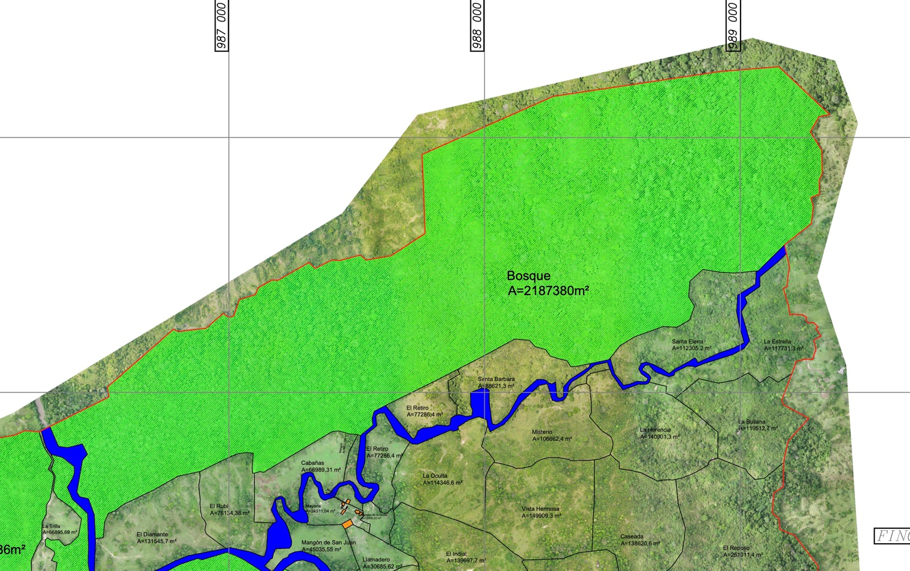
218 haBosque continuo dentro del polígono, con su dosel, su sotobosque y su fauna.
Quebradas que nacen y corren dentro del predio.
La reserva hace parte de San Juan de Frías, la finca ganadera de la familia.
Se entra por la finca. Una sola entrada.
Crax alberti es endémico de Colombia: no existe en ningún otro lugar del planeta. La UICN lo clasifica En Peligro Crítico —la última categoría antes de extinto en estado silvestre—. En 25 años perdió el 92,8% de su hábitat.
Una noche, dentro del polígono, la cámara trampa se activó. Ahí estaba: un paují de pico azul, vivo, en su territorio. No un archivo, no un fósil —una población que respira donde el bosque sigue en pie.
Donde el paují aparece, el bosque está sano. Cajuches, monos y felinos comparten el mismo dosel —cada registro, una prueba de un ecosistema todavía completo.
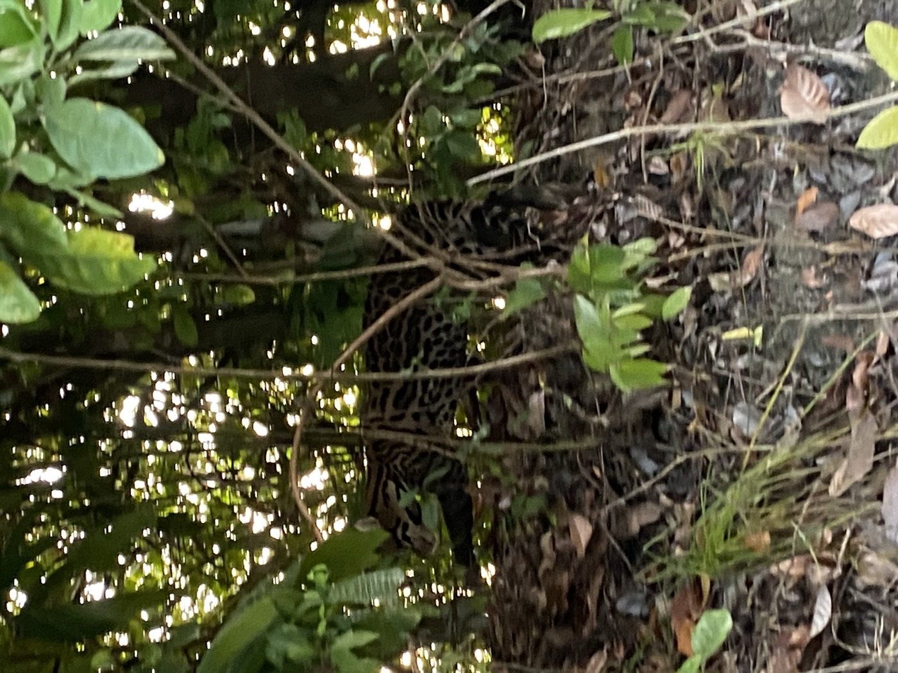
Registros de cámara trampa en la reserva. Seguimos ampliando la línea base con más cámaras y más noches.
El polígono, sin filtros: el dosel continuo, las quebradas propias y el sotobosque donde trabaja la cámara.
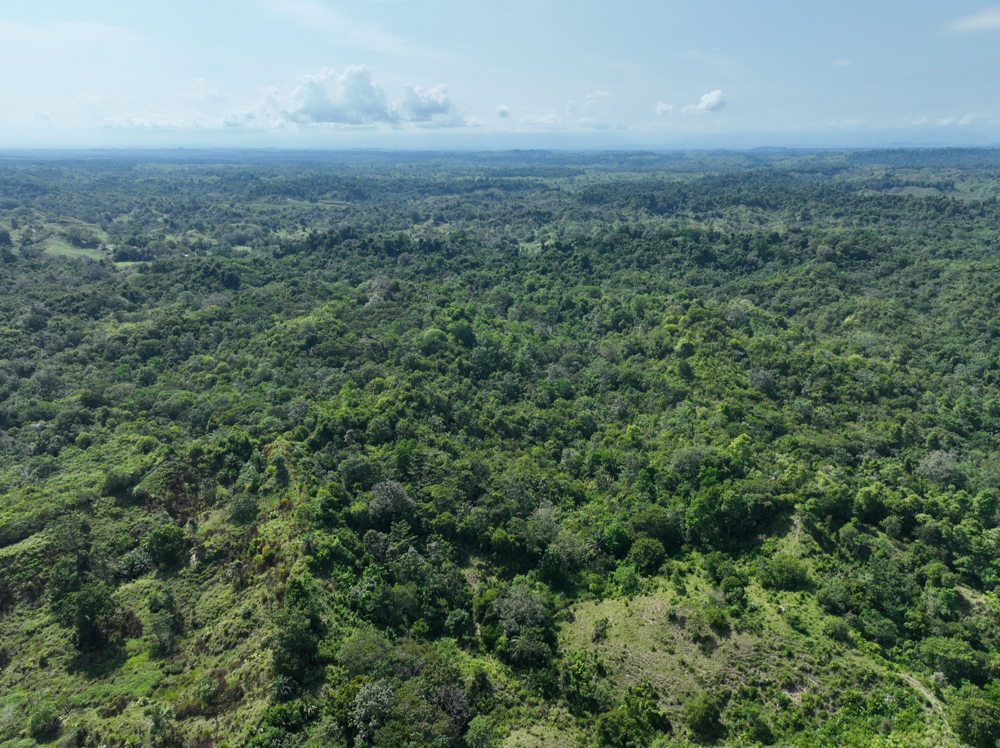
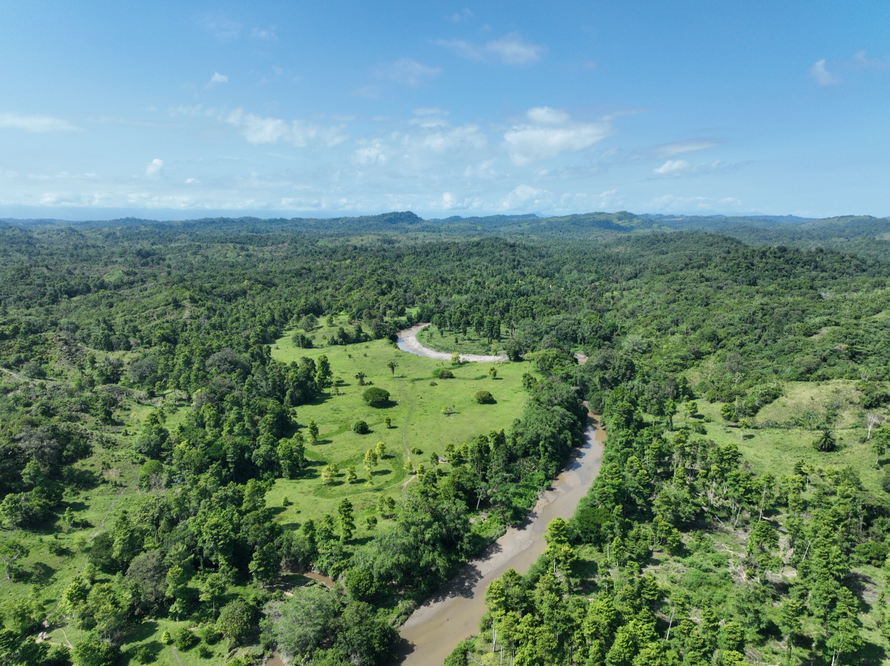
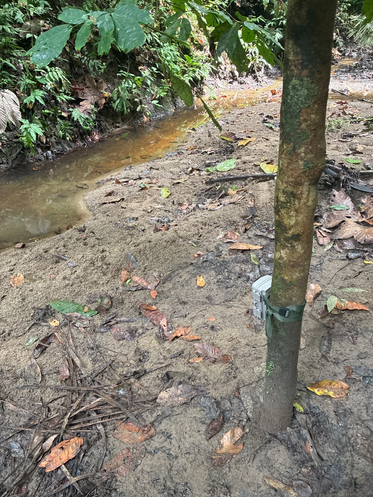
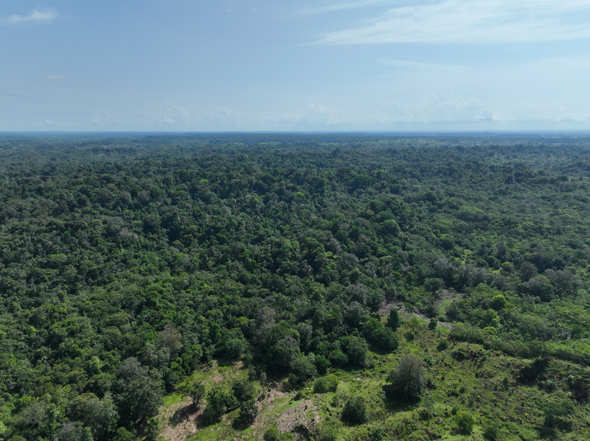
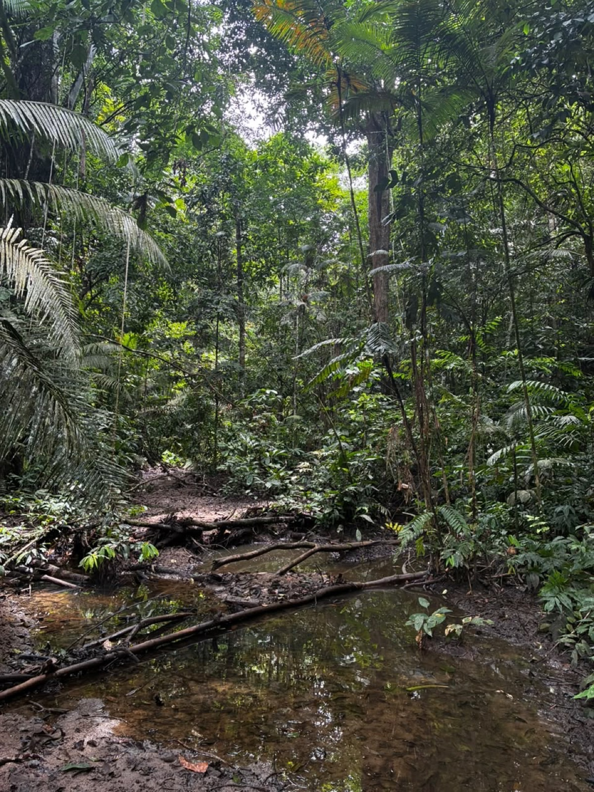
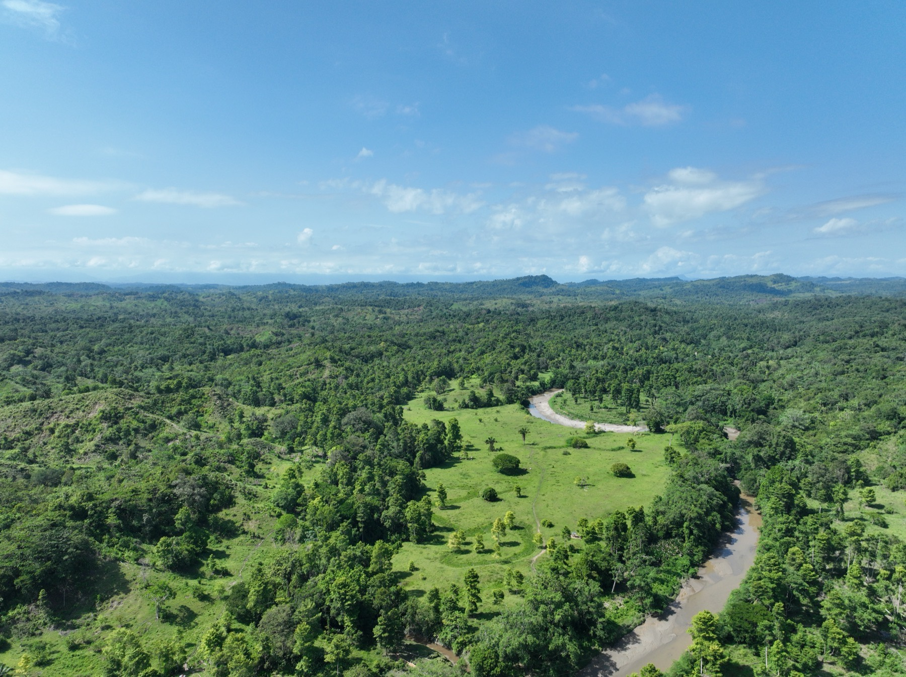
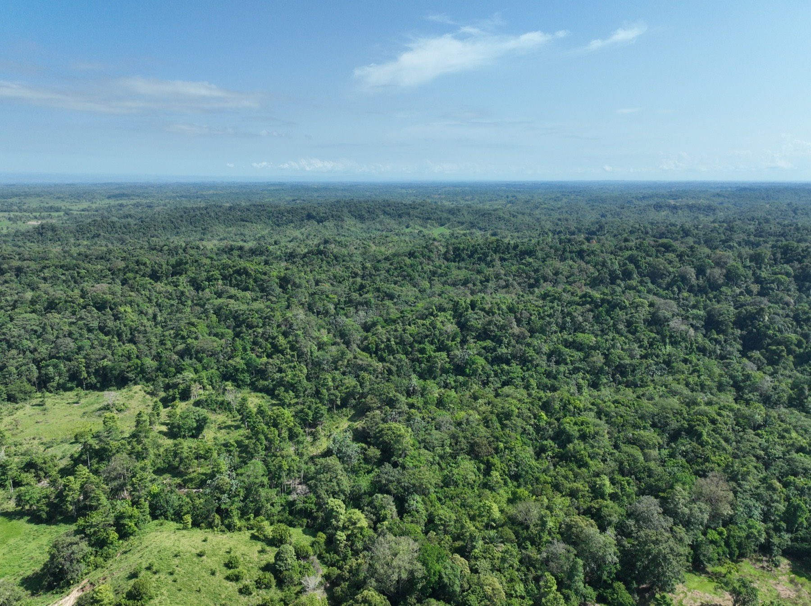
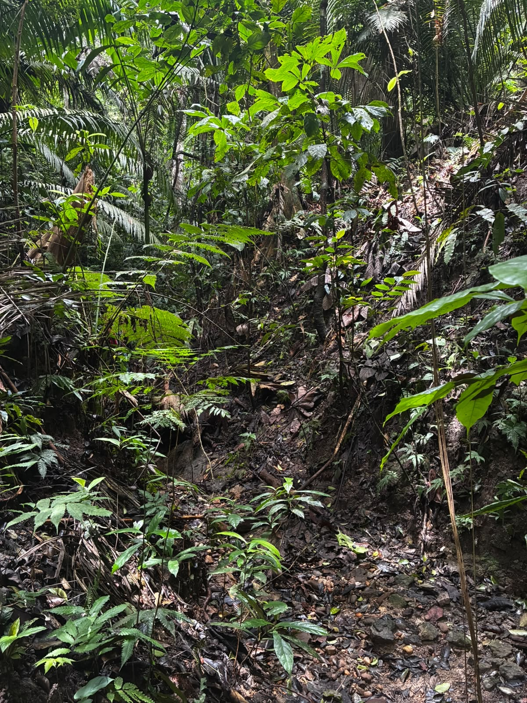
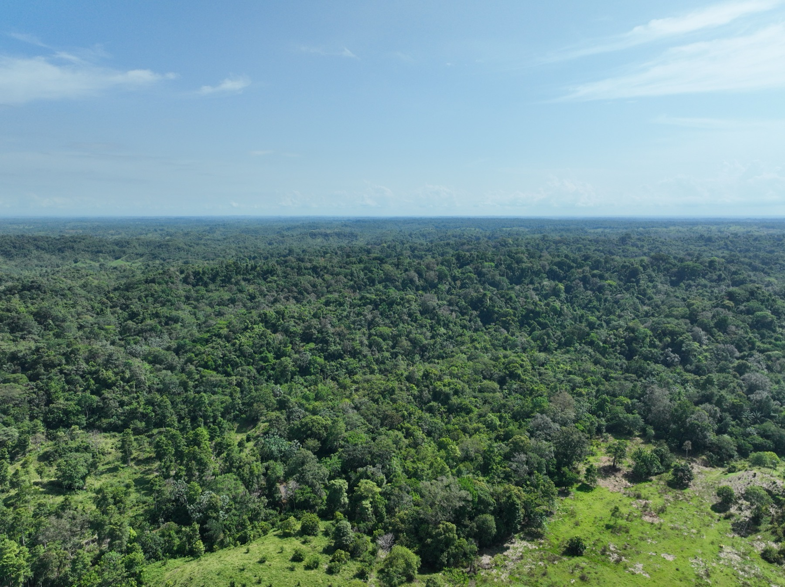
Las 218 hectáreas quedan protegidas, con inventario de especies y monitoreo con cámaras trampa.
Puertas abiertas a la investigación, la educación y las comunidades que rodean el bosque.
En la finca, no en la reserva. Ganadería San Juan aprende a producir más cuidando el suelo, al lado del bosque que se conserva.
Este bosque sigue en pie justo donde ellos lo defendieron.